顺序执行 🥊
回忆上次内容
- 上次用
uname -a查看了- 内核版本
- cpu指令集
- 发行版
- 这就是我们linux的初体验
- 我们了解了linux内核
- 但是linux究竟是如何从个人软件玩具
- 发展成世界知名的操作系统内核的呢？？🤔
行业起源
- 电子计算机 技术
- 起源于 织布机
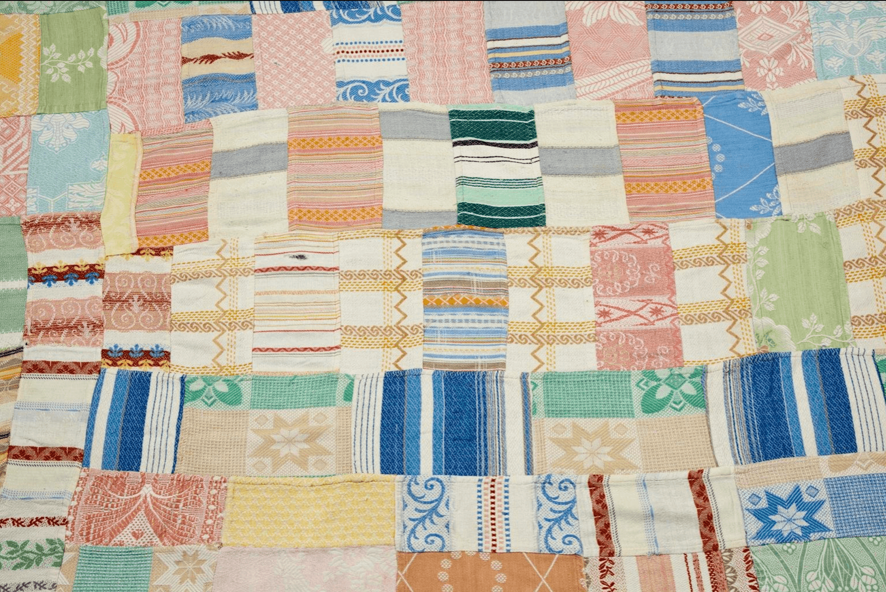
- 编程 来源于 编织
- 这挨着吗？😮💨
纯手工
- 我们先看一下 时代背景
- 原来 纺线 和 织布
- 都是 纯手工活儿
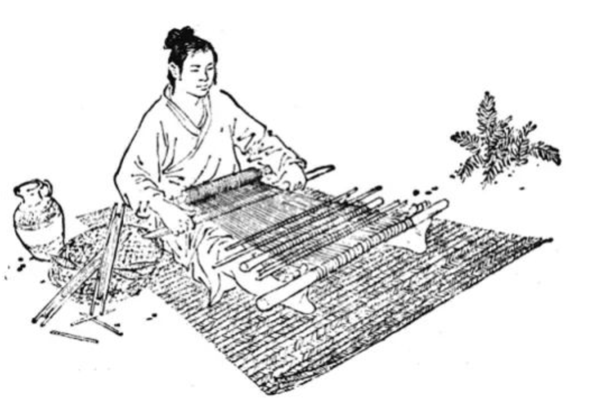
- 纺纱 用的是 纺锤
- 织布 用的是 腰机
工业化
- 珍妮 纺纱机
- 将 效率提高八倍 以上
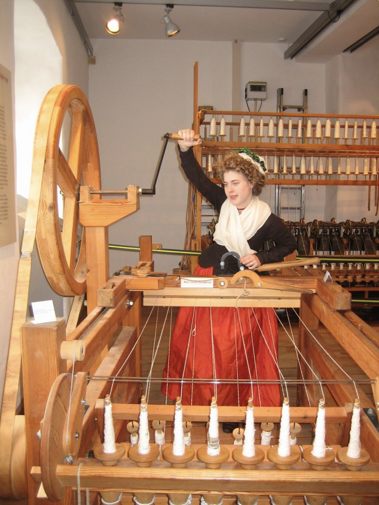
- 用机械化
代替了 纯手工- 羊毛 不够用
工业化开始
- 毛纺织利润率 高于 小麦种植
- 领主 转型 企业家
- 地 不租给 农奴 了
- 改 养羊
- 羊 就这样 吃了人
- 圈地运动
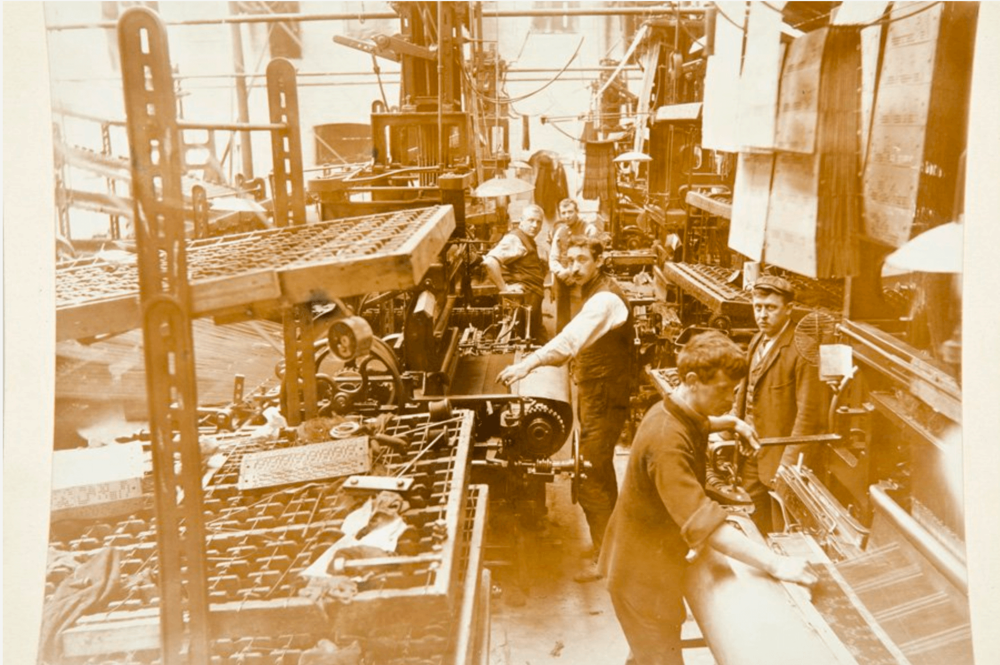
- 圈出的地 多了
- 羊 多了
- 羊毛 多了
- 无产者
也多了- 涌入 新出现的城市
- 成为 纺织业和大航海的 基础
纺织之都
- 纱锭 过剩
- 织布 迅速 产业化
- 毛纺基地 在
哪儿呢？
- 曼彻斯特
- 三河交汇河
- 可接入 利物浦来的 深海船舶
水力织布
- 水力丰富
- 由 人的肌肉力 改为 水力
- 再从 水力 改到 蒸汽机
- 引领 工业化
- 机械化 大生产
- 成为 纺织之都
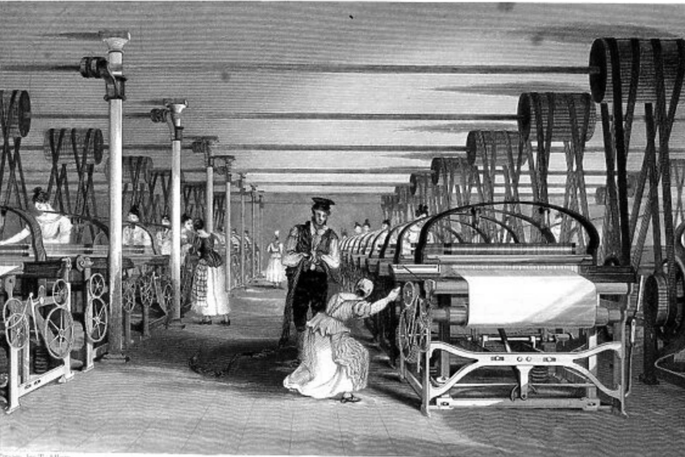
- 纺织品 多了
- 就 对外倾销
进一步工业化
- 工业化纺织品 配合 坚船利炮 和 鸦片贸易
- 向 印度 殖民
- 再 低价获取 印度棉花
- 棉花 替代 羊毛
- 棉纺 代替 毛纺
- 工业化 再加速
- 棉纺品 迅速 占领市场
- 控制 经济
- 强迫 其他文明
- 放弃 男耕女织
- 接受
工业标准 - 卷入 工业化、职业化
- 这也埋下了
- 衰败的种子
早期编程
- 织布机
- 从 纯色 布
- 过渡到 贾卡 提花织布机
- 通过 卡片
- 生成 花纹
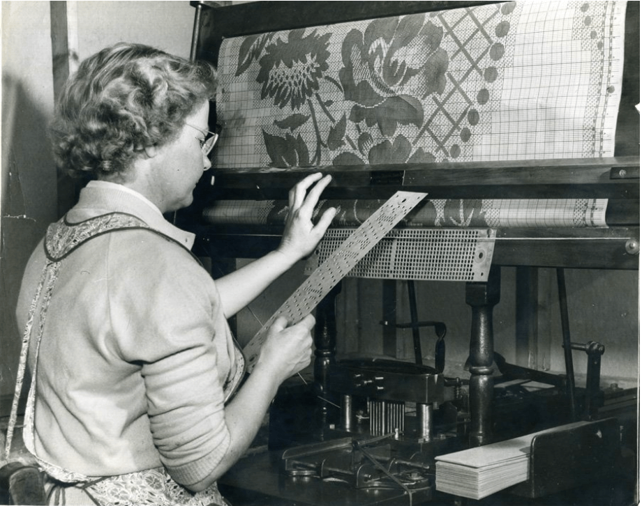
- 卡片如何设置花纹呢？
花纹
- 贾卡 提花织布机
- 将 织物的图案
- 提前 编到 打孔卡片 上
- 有孔 就保持经线不动
- 无孔 就提起经线
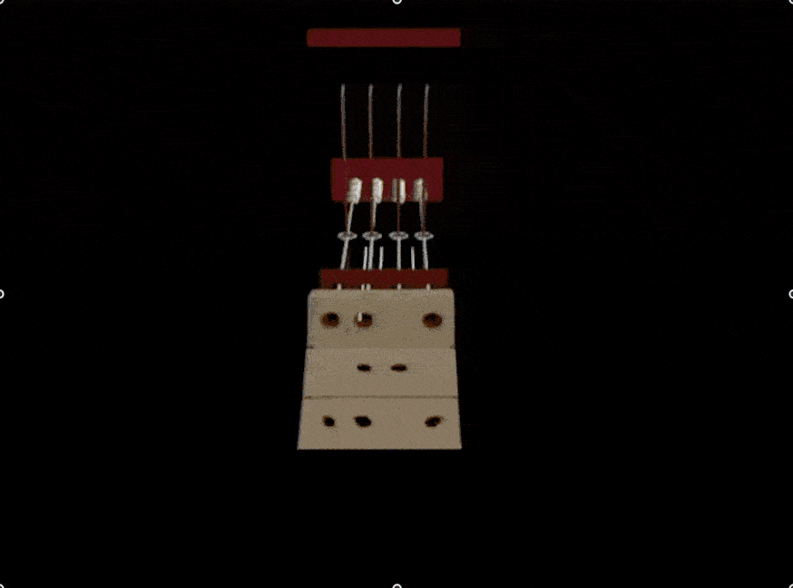
- 这也 暗合 了 Program 这个单词
- pro - 提前
- gram - 画好
- 用 打孔卡片
提前画好花纹图案- 启发了 IBM
信息领域
- IBM 人口统计
- 放弃了 纸笔填表
- 使用打孔 卡片
- 将 人的姓名、籍贯、性别等信息
- 编码为二进制
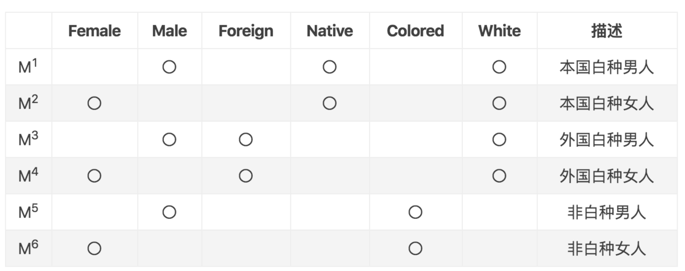
记录在卡
- 进行记录 在卡上
- 统计起来就快多了
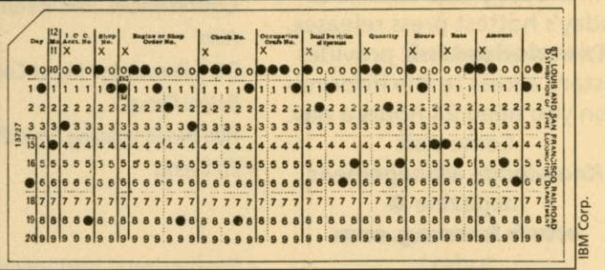
- 有孔 代表 选择
- 无孔 代表 不选择
编程
- 后来 IBM
- 在打孔卡片上
- 将需要执行的 机器指令 提前编好
- 后续 批处理 执行
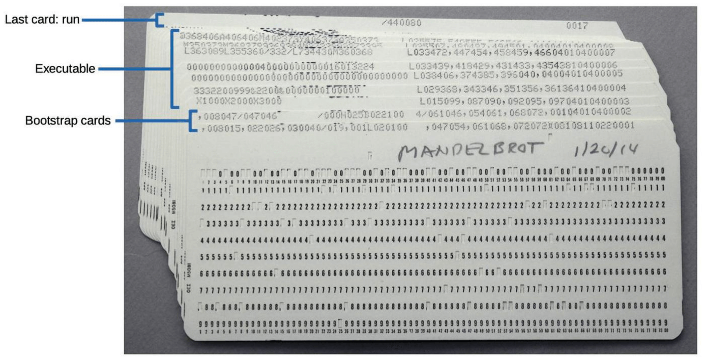
- 程序
- 有 物理实体
- 可以执行
- Program
- pro 前面 、预先
- gram 刻画
- 预先刻画
- 提前编制
- 带动了
- 产生了 IT(信息技术)产业
- 诞生了 以编程为 职业的人
程序员
程序
程序员- programmer
- 编写的程序
- 源自 卡片
- 卡片源自 织布机
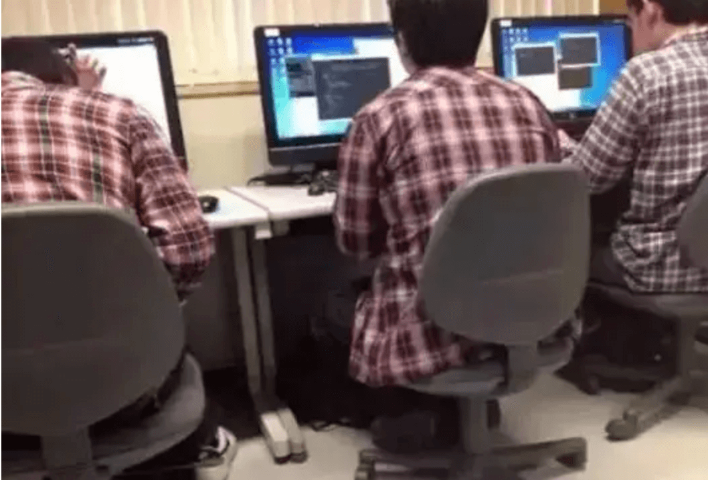
- 程序员
- 职业诞生之时
- 就与 格子衬衫 结下不解之缘
进化
- 存储设备
- 从 打孔卡片
- 变成了 磁带
- 使用 高级语言 写 源程序
- 再用
编译器(compiler) - 将 源代码
编译成 机器语言
- 再用
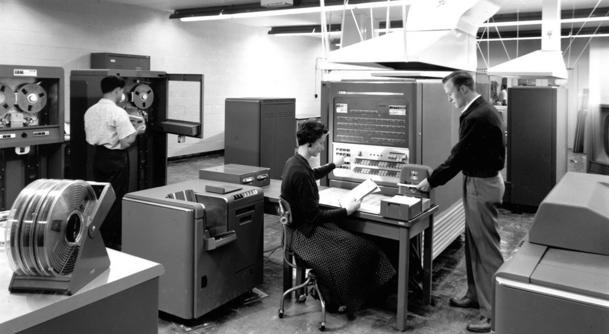
- IBM
- 销售的 是 硬件
- 软件和源代码 附送
- 整个IT产业
- 起源于此
家酿俱乐部起源
- 1973年
- Intel微处理器 持续进化
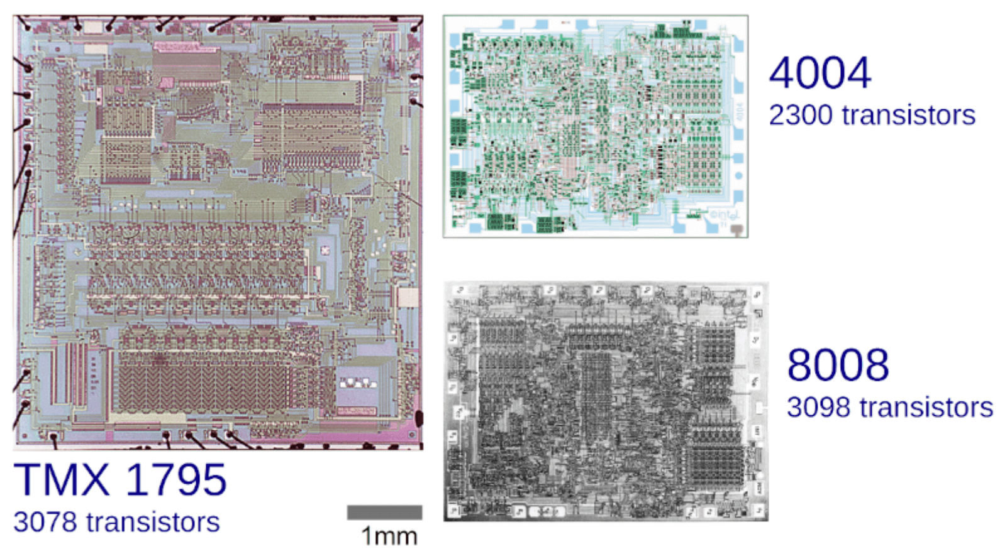
- 爱好者 可以
DIY- 个人 计算机
- Personal Computer
家酿
- 计算机的 爱好者们
- 自己 组织了起来
- 成立了 家酿俱乐部
- 家酿 HomeBrew 就是
- 自家酿 的酒
家酿计算机 俱乐部
- 家酿俱乐部 成员
- 有相同的
业余爱好 - 制作、分享 软件
- 有相同的
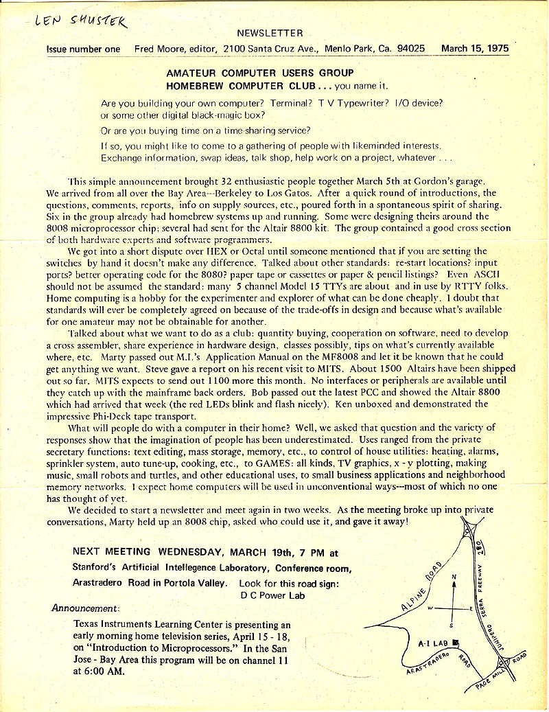
- 第一次 聚会
- 地点 在湾区
- 乌托邦的 感觉
- 各自分享 自己编写的软件
- 带走拷贝的 人
- 需要 下次带来 两个拷贝
- 以便 更多的人 进行拷贝
- 这种分享文化从哪里来呢？
历史背景
- 1970s
- 嬉皮士 运动
- 刚 过去不久
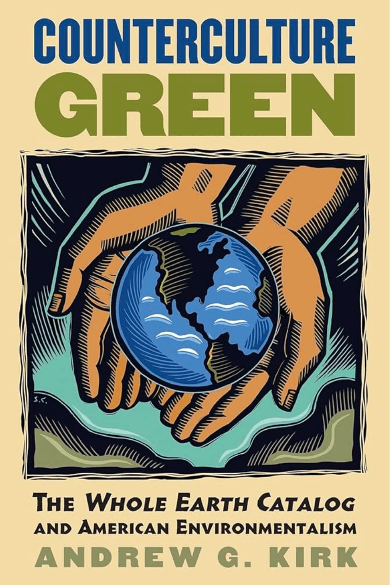
- 反对 建制
- 渴望 回归自然
- 最能够代表 其精神内核的
- 就是 杂志
《全球概览》
- 就是 杂志
全球概览
- 《全球概览》
- 践行
DIY精神 - 建立 公社
- 践行
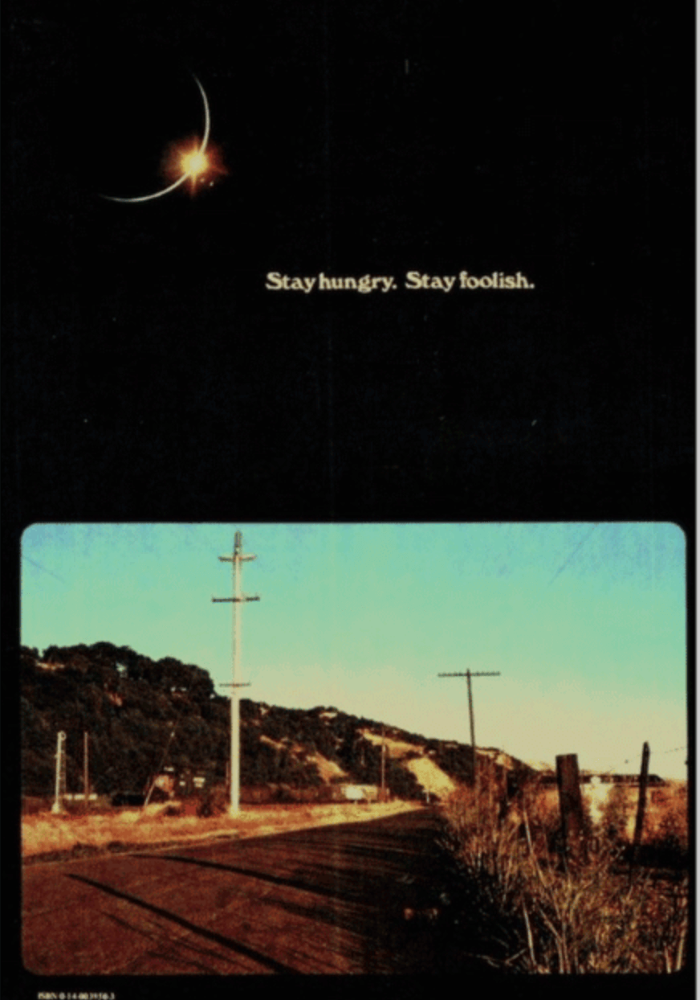
- 结尾语
- 影响了很多人
摇篮
- 结尾语
- 通过 乔布斯 再次传播开来
- 家酿 属于
- 计算机方面的公社
- 乔布斯 也在里面 学习
发现商业价值
- 很多人 受到感召
- 来到家酿
- 学习 分享
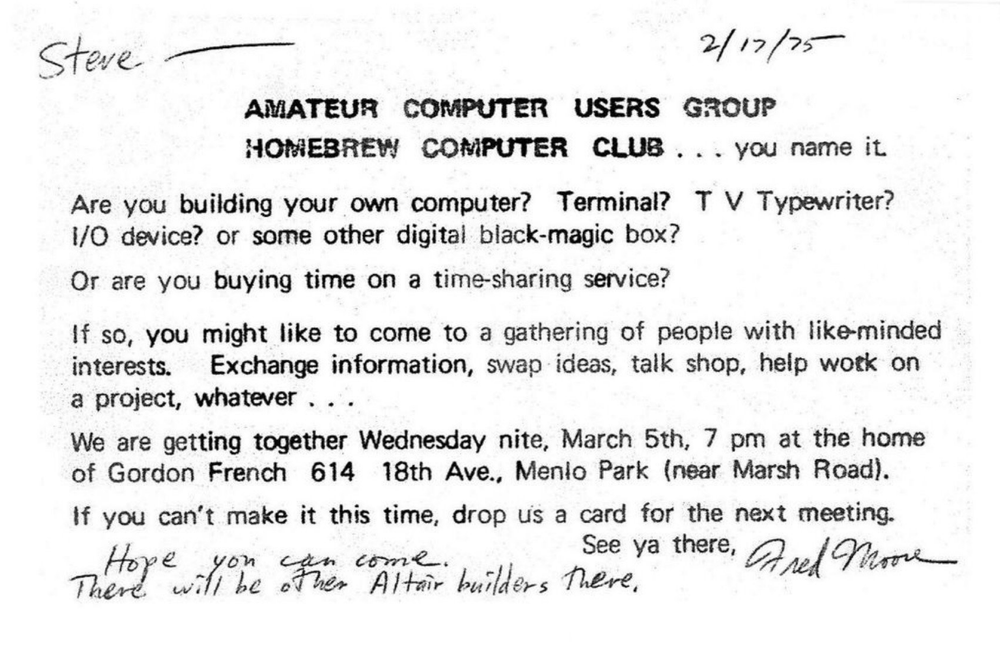
- 这些人
- 后来引领了it产业
企业家
- 虽然很多人把开发软件作为乐趣
- 但是从来没有人把写软件
- 专门做成一门生意
- 有个叫 比尔盖茨
- 不但 在家酿俱乐部 学习编程
- 更感知到了 软件的
商业价值
Entrepreneur
- Entrepreneur
- [ˌɑːntrəprəˈnɜːr]
- 企业家
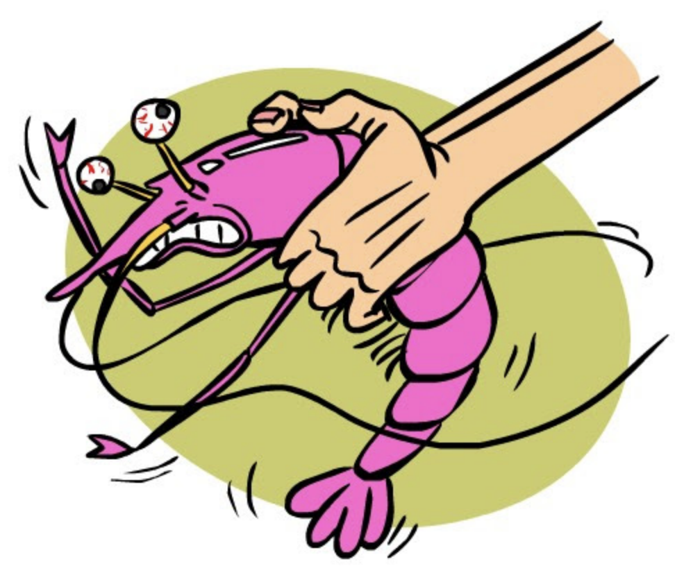
- 单词来自于法语
- entre 在……之间
- Prendre 意为“拿、抓、接受”
- entrepreneur 在机会和风险之间抓住机会的人
大潮
- 比尔·盖茨
- 辍学 编写软件
- 发现 软件 可以直接卖钱
- 成立了 微软公司
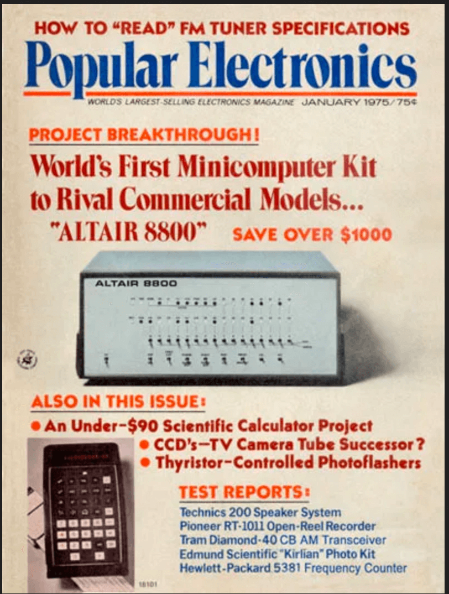
- 他希望 将开发软件这个业余爱好
产业化
产业化
- 农业 手工业 时代
- 产品 都是 独一无二的
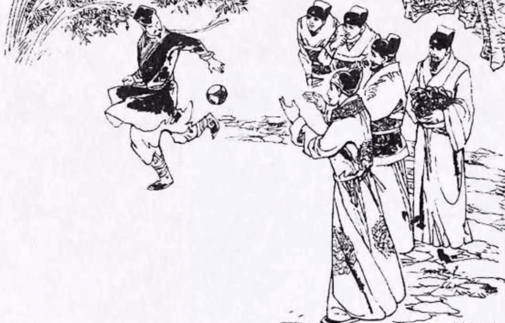
- 每一个 沙包、毽子、足球
- 都是 独一无二的
- 玩着就做出来了
- 没有 职业足球制作者
- 更没有 职业足球工厂
运动起源
- 就像 职业足球联盟
- 最初 没有 职业球员
- 踢球 完全是 业余爱好
- 产业化后
- 可以 形成 商业俱乐部联盟
- 吸引注意力
- 再尝试 引导消费
- 建立联赛
- 先卖门票
- 再卖广告
- 足球 成为 产业
- 球员 成为 职业
童子功
- 职业球员
- 要从小 就开始职业化
- 练童子功
- 不但是 科班出身
- 最好还得是 门里世家
- 要从小 就开始职业化
- 要是 票友入的行
- 一般被嘲笑 为 外行、门外汉
- 本来 就是一踢球玩的游戏
- 越来越 讲究 规矩
- 按照阵型 踢某个位置
- 做出标准动作
新时代
- 工业时代 讲究
- 提高效率、精度、利润
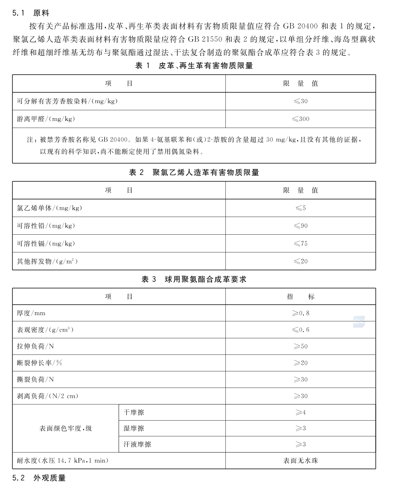
- 注重标准化、职业化
三分手
- 职业球员 三分手
- 手感 高度依赖于 标准篮球、篮筐高度
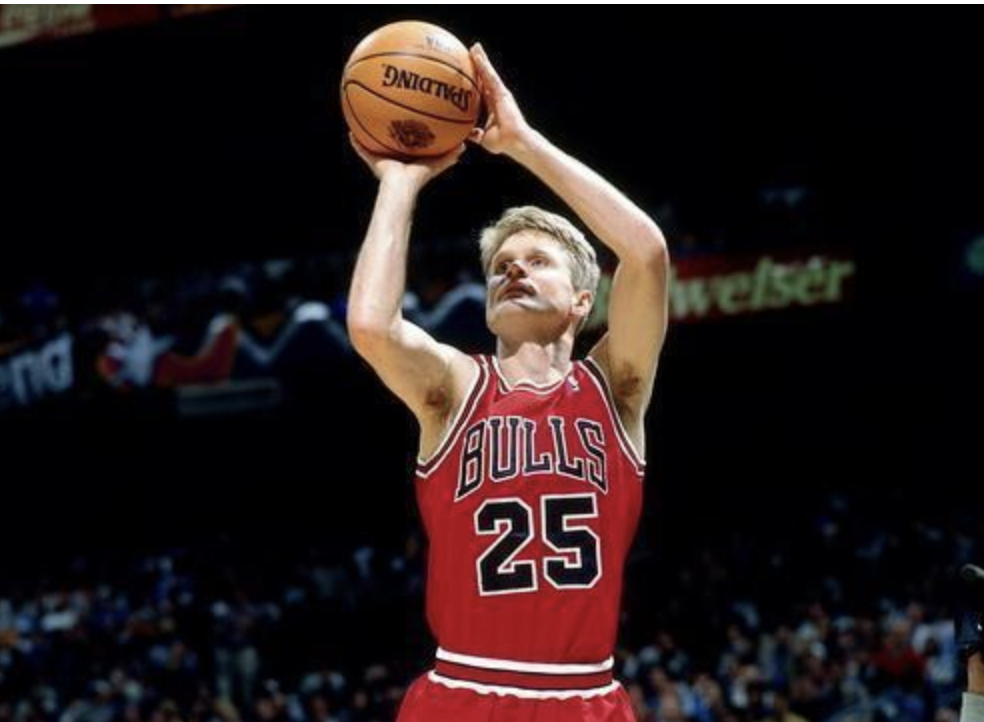
- 工业标准
- 也是 一环扣一环
- 在高精度材料 的基础上
- 完成 更高精度的 产品
雇佣
-
比尔·盖茨
- 发现了 软件的商业价值
- 想做 软件领域 的企业家
-
雇佣人 写程序
- 把 爱好和乐趣
- 变成了雇佣关系
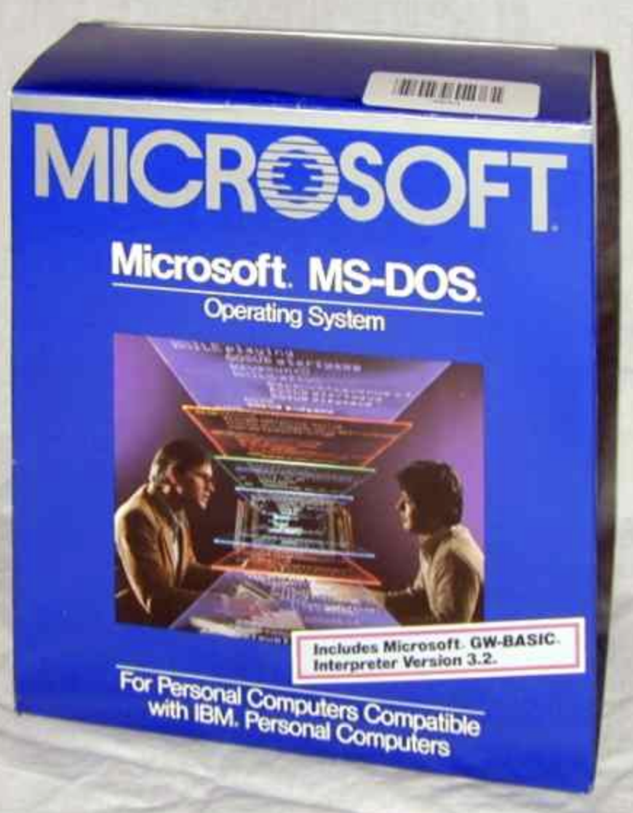
- 软件
- 从 个人爱好 DIY产品
- 逐渐 发展成 产业
异军突起
- 在传统的计算机路径之外
- 出现了基于intel和dos的个人计算机(pc)
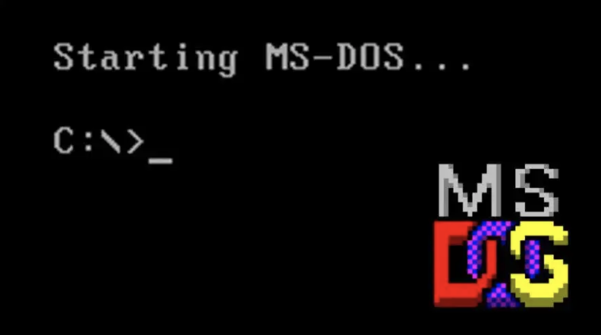
- 这一脉人数众多
- 但是没有自己diy的传统
- 电脑是买来就能用的
- 最多装一下系统
- 没有自己折腾软件的文化
更进一步
- 比尔·盖茨
- 想要更进一步
- 杜绝 已经存在的 软件分享习惯
- 把 软件的源代码 控制在自己手里
- 这样 就可以提高软件的商业价值
- 挣更多的钱！
公开信
- 在 家酿俱乐部
- 比尔盖茨 给计算机爱好者
- 写了封
公开信
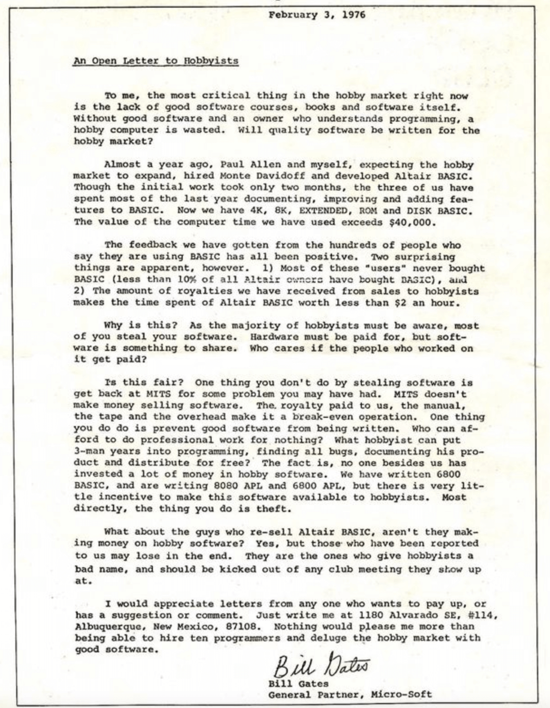
-
别 以写软件为乐 了
- 也不挣钱 图啥呢？
-
并将 拷贝软件的 行为
- 称作小偷
- 还要起诉
- 自由分享的行为
总结
- 软件行业 也和 各行各业一样
- 从 个人兴趣爱好
- 发展为 产业

- 比尔盖茨 将 公开信
- 发到 家酿俱乐部
- 冒 天下之大不韪
- 起诉 自由分享的行为
- 会有
什么结果 呢？
- 家酿的黑客群体
- 会
如何反击呢？🤔
- 会
- 我们下次再说！👋